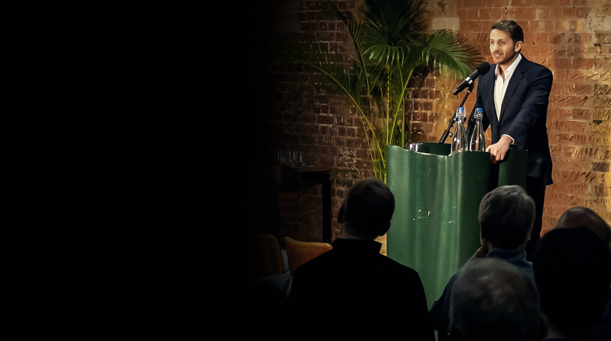
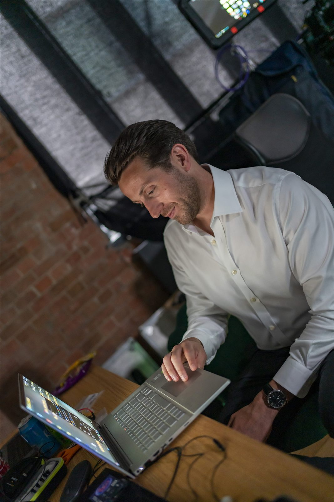
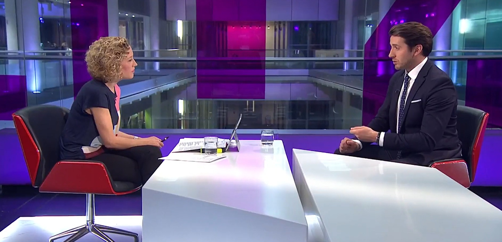

Private prosecutor. Campaigner. Documentary producer. Ten years spent trying to make lying in politics a criminal offence.
The direction
Everything sits on near-black. Photographs run full width and full bleed, graded the same way every time: crushed blacks, low saturation, warm skin, a scrim underneath so text is always legible. One accent colour, brass, used for perhaps three things on a page. No gradients on buttons, no rounded pills, no shadows pretending to be depth.
Type is one family in two roles. Headlines set tight and uppercase, the way a title card is set. Body copy stays light and generously spaced so long reading is comfortable. Labels are small, wide-tracked and brass, which is the single strongest cue that a site has been designed rather than assembled.
Rules
One accent. Brass, never gold-plated.
Corners at 2px. Nothing rounder.
Motion is a fade, 200 to 400ms. Nothing bounces.
Every photograph graded identically.
Black is the page. White is the ink. Brass is the pointer.
Palette
Ground#050608
Surface#0C0E12
Field#151920
Brass#C6A15B
Ink#F4F5F7
Today's site uses #0b0c0f and a lighter gold, #c8a24a. The change is small on paper and large on screen: a deeper ground makes photographs look lit rather than printed, and a slightly duller brass stops the accent reading as decoration.
Type
Body copy sits at 16.5px, weight 300, line height 1.65, capped at about 62 characters a line. It is quiet on purpose. The work is heavy enough without the typography shouting along with it.
Work covered by
Archivo
Aa Bb Cc
One family, four weights: 300 for reading, 500 and 600 for headings, 600 wide-tracked for labels.
Label / 600 / .34em
Photography

Portrait
CourtThese are your existing files with the grade applied in the browser, so you can see the intent. Done properly the grade belongs in the photographs themselves: export at 2400px on the long edge, sRGB, with blacks crushed, saturation pulled back, skin kept warm and a light grain. Hover one to see it come up out of the dark, which is the only motion on the page.
Controls
Primary is solid brass and appears once per screen. Everything else is a hairline. Both are square to 2px, because rounded buttons read as software and this is not software.
Contact